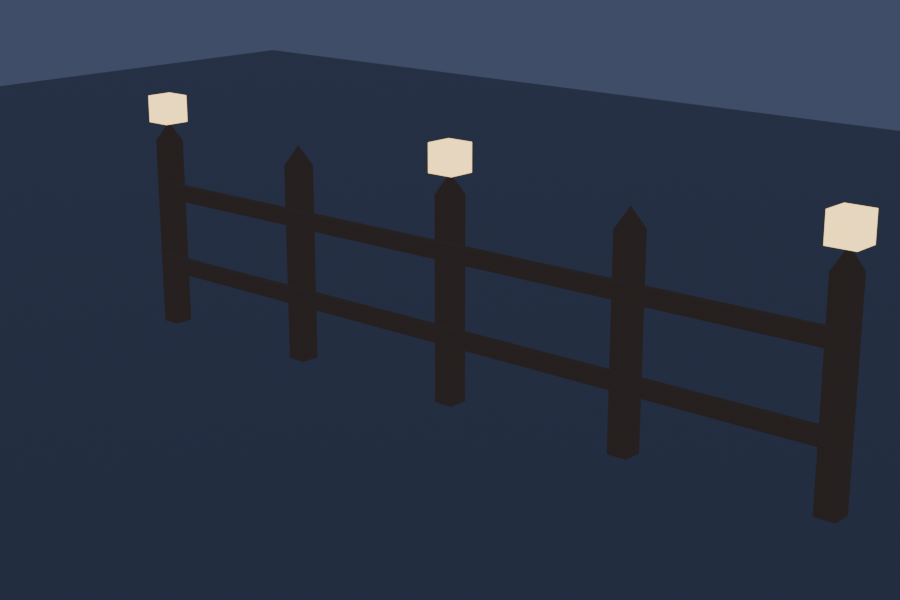
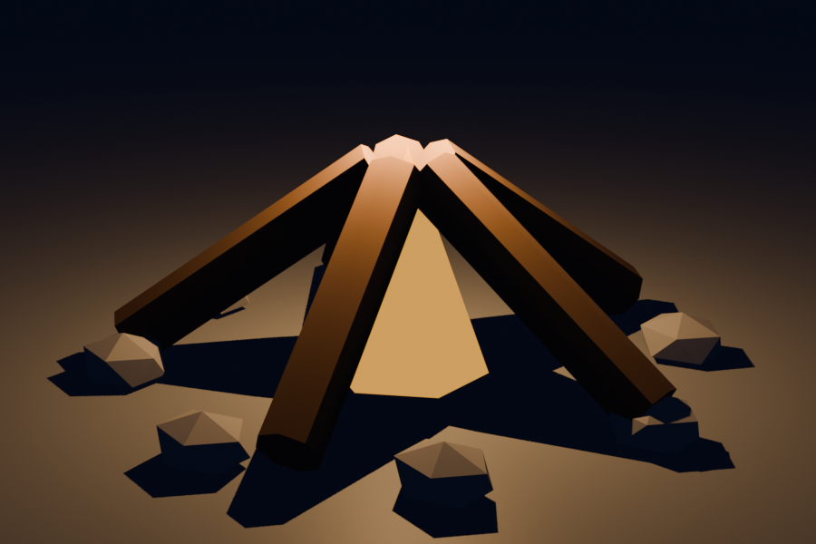
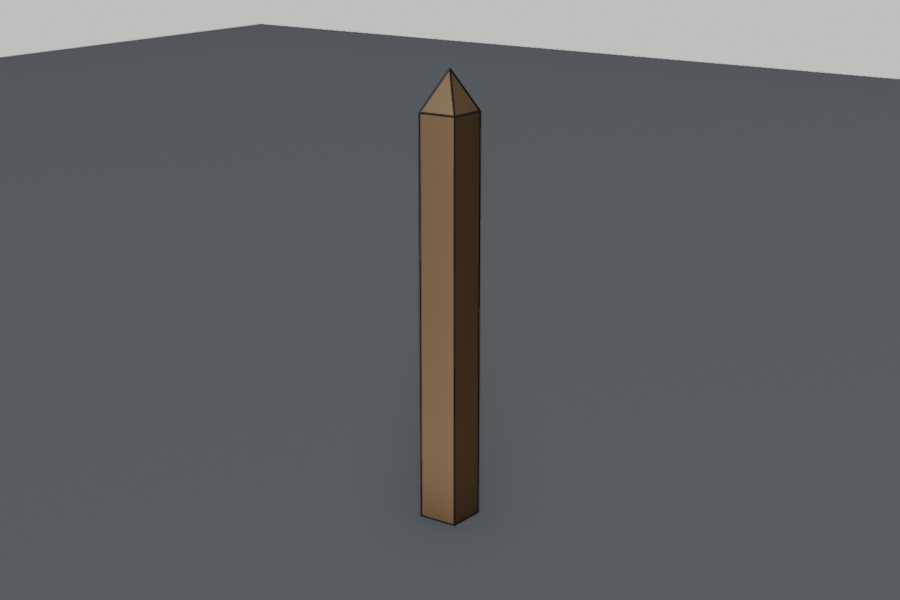
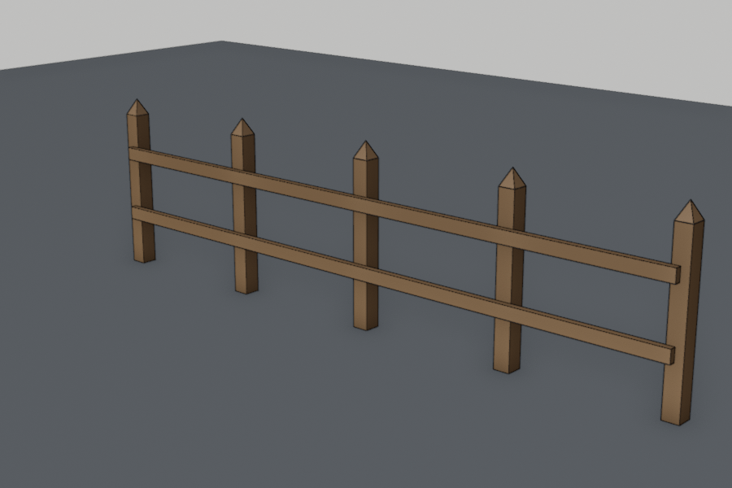
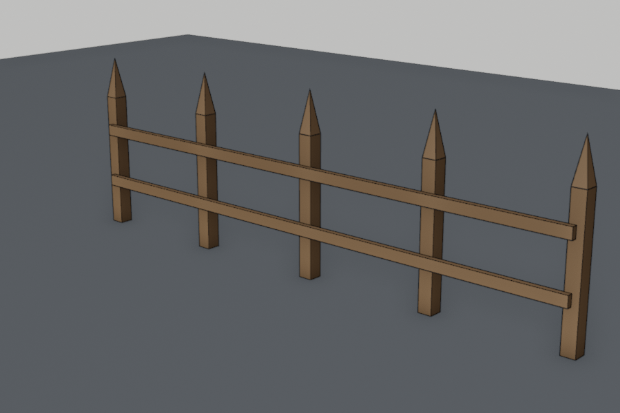
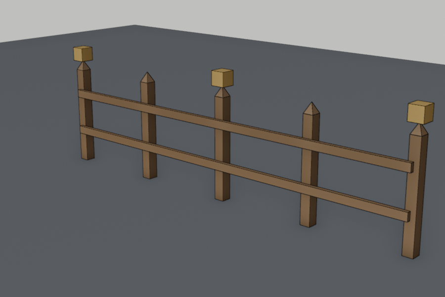
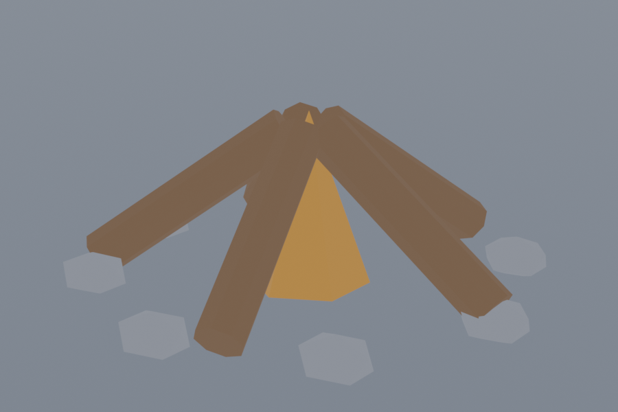
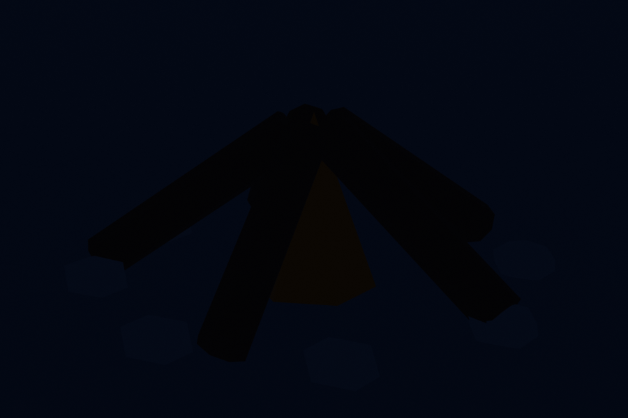
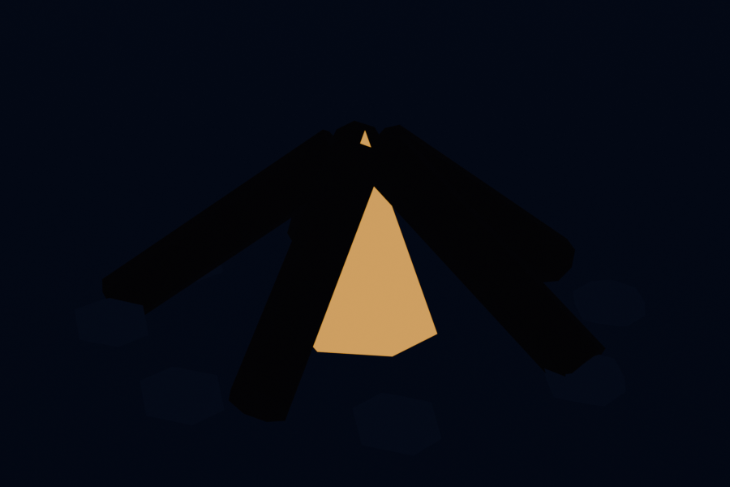

Lesson 12 · Blender track
Linked copies, glow, and night
Grant's Parts 7–8, the last two videos of the course. Each is followed by a short exercise: a lantern fence, then your campfire at night.




Warm-up: from memory
From Lesson 11: you want five copies of a log around a centre point. Which pivot, and which keys?
Show answer
Pivot = 3D Cursor (at the centre). Then Shift+D, RMB, R Z72, four times.From Lesson 3 (Godot): what happened to every crate when you changed the material in crate.tscn?
Show answer
They all changed, because they shared one resource. Keep that in mind: Part 7's linked duplicates are Blender's version of the same idea.Session 1: Part 7, then the fence
Part 7: The street (14 min)
| Chapter | Watch for |
|---|---|
| 03:20 Challenge: street lamp | Do it before the solution. |
| 04:52 Linked duplicates (Alt+D) | Key idea. The manual: “If you modify one of the linked objects in Edit Mode, all linked copies are modified.” But each copy keeps its own position, rotation and scale. It's the object vs data split again. |
| 06:40 Roughness & Metallic | Revision from Lesson 8. These are the values that reach Godot. |
| 07:15 Raytracing | A Blender rendering setting. Godot has its own lighting, so just watch. |
| 08:10 Linking materials | Ctrl+L → Link Materials “replaces the materials of the selected objects by those of the active object”. The active object (selected last) is the source. |
| 09:20 Emission | A material that gives off its own light: eyes, lamps, lava. It reaches Godot too (see below). |
| 10:11 Slots for the lights | Material slots again, the Lesson 10 skill. |
Exercise A: a fence of linked copies
Practises: Alt+D vs Shift+D, Shift+R (repeat last), Link Materials and Emission. Target: 5 posts, 1 m apart, 1.1 m tall, with two rails and three lanterns.








- New file. Shape the post in Edit Mode from the default cube: Tab, A, S
0.05(a 10 cm cube), S Z10(1 m tall), G Z0.5. The origin is now at the post's foot. Name itPostand give it aWoodmaterial. - Pointed top: face mode, select the top face, E
0.1Enter, then S0Enter to shrink it to a point. Clean up with M → At Center to merge the four stacked vertices into one. Tab out. - Object Mode: Alt+D, X
1Enter. Then Shift+R three times. Repeat Last “will repeat your last action”, so you get five posts, 1 m apart. - Rails: add a cube and shape it in Edit Mode to 4 m × 4 cm × 8 cm (S X
2, S Y0.02, S Z0.04), then move it toX 2,Z 0.75, just in front of the posts. Shift+D Z-0.4makes the lower rail. Give both rails the wood: select the rails, then a post last, then Ctrl+L → Link Materials. - Experiment: select any one post, Tab, select its tip vertex, G Z
0.2. Watch all five. Then Ctrl+Z. Now select a rail and try the same with one of its vertices. Why does only that rail change? - Lantern: a cube of
0.14m on top of the first post (aroundZ 1.17). New materialLanternGlow: set its Emission Color to warm yellow and Emission Strength to about3. Alt+D it onto posts 3 and 5 (X2, then Shift+R). - Z → Rendered view. Lanterns glow, but against a bright default world it's subtle. Peek ahead: World Properties → Color, set a dark blue to see it properly. Save as
blender/fence.blend.
Answer to step 5: why did only that rail change?
Show answer
The second rail came from Shift+D, which makes a full copy with its own mesh. The posts came from Alt+D, so they share one mesh: one piece of data, five objects. That's exactly Godot's one resource, many nodes.Checked in Godot 4.7.2: three Alt+D copies exported to glTF arrive as three MeshInstance3Ds sharing one mesh resource. An Emission Strength of 5 arrives as a StandardMaterial3D with emission enabled and energy 5.0. So linked copies and glow both survive the trip.
Session 2: Part 8, then the campfire at night
Part 8: Lights & compositing (13 min)
| Chapter | Watch for |
|---|---|
| 01:44 Fog material | Atmosphere in Blender renders. Godot does fog in its own way. |
| 03:27 Torch light | Point lights: a light that shines in every direction from one spot. You'll put one in your fire. |
| 05:24 Street lights | More lights, placed with what you know. |
| 06:30 World shader | The world colour is the “sky light” that fills the whole scene. Darken it to get night. |
| 09:15–11:56 Compositing, Glare | Post-processing on the final image. It's how you'd make a nice picture of your work. |
Part 8 is the most Blender-specific video: lights, world, fog and compositing don't come along into Godot through your export. Godot has its own equivalents for when you get there (OmniLight3D for a point light, and a WorldEnvironment for sky, fog and glow). The ideas carry over completely.
Exercise B: your campfire at night
Practises: the world colour, Emission, point lights and rendering. Open blender/campfire.blend from Lesson 11.







- Z → Rendered view, with Render Engine EEVEE (Render Properties).
- World Properties → Color: a very dark blue, Strength about
0.3. It's night, and you can barely see anything. - Flame material: Emission Color orange, Emission Strength about
1. Higher values wash the orange out to pale. The flame glows, but notice the logs stay dark. - Shift+A → Light → Point. Colour warm orange, Power about 20 W. Put it above the flame tip, at about G Z
0.6, not inside the cone: the solid cone would block it, like the trap picture. - Find a nice angle, Ctrl+Alt+Numpad0 to put the camera there, then F12 to render. Save the image from the render window (Image → Save As).
- Optional, Part 8 style: add a Glare node in the Compositor for a soft glow around the flame.
Predict, then check: after step 3, the flame is bright orange. Why are the logs right next to it still black?
Show answer
In EEVEE, an emissive material mostly makes the surface itself bright. It doesn't throw much light onto nearby objects. To light the scene you add a real light, which is why every lamp in Part 8 is a light plus a glowing material. Godot works the same way: emission makes a mesh glow, and anOmniLight3D lights the surroundings.All pictures on this page were rendered by Blender 5.2.2 (EEVEE) from a script that follows these steps, including the trap: a light inside the solid flame cone really does change nothing.
Recall: after both sessions
You Alt+D a post, then move the copy in Object Mode. What happens to the original?
For Ctrl+L → Link Materials, which object gives its materials?
Which of these reaches Godot through your usual glTF export?
Your point light seems to do nothing. Most likely cause in this lesson?
For next session (spaced recall)
- Alt+D vs Shift+D: what's shared, what isn't, and the Godot equivalent.
- Emission vs a light: what each one does to the scene.
- From Lesson 11: what Mirror Clipping does.
That's the whole beginner course done. Next time we'll look back at what you can do now and decide together where to go: Grant's low-poly modelling playlist, back to the game in Godot with your new props, or something else.
Lanterns not glowing, linked copies not updating together, or a render that comes out black? Tell me which step and what you see. A screenshot path works too.